layout: true .footer[ - <div class="tooltip"><a href="/"><i class="fas fa-home"></i></a> <span class="tooltiptext">Go to C454 Main Page</span></div> - <div class="tooltip"><a href="/lectures"><i class="fas fa-chalkboard-teacher"></i></a><span class="tooltiptext">Go to Lecture List</span></div> - <div class="tooltip"><i class="fas fa-question"></i><span class="tooltiptext">Press <kbd>Shift</Kbd> + <kbd>?</kbd> for Navigation Tips!</span></div> ] --- class: center <!-- <h2 style = "text-align: left; font-weight: bold; margin-left: 40px; font-size: 54px; margin-top: 10px;">Environmental applications of ultratrace spectroscopy</h2> --> <!-- <h2 style = "text-align: left; font-weight: bold; margin-left: 40px; font-size: 54px; margin-top: 10px;">Ultratrace Spectroscopy for Environmental Analysis</h2> --> # CHEM 454 # Intro to Electronics <center> <img src="https://upload.wikimedia.org/wikipedia/commons/8/8b/Electric_source_and_load_animation_2.gif", style="margin-top: 10px;"> </center> 1. Go over basic definitions 2. Go over basic circuit components 3. Start to look at simple circuits .image-credit[Qniemiec via [Wikimedia Commons](https://commons.wikimedia.org/wiki/File:Electric_source_and_load_animation_2.gif), [CC-BY-SA 4.0](https://creativecommons.org/licenses/by-sa/4.0/)] --- # What is electricity? -- > A set of physical phenomena associated with matter that has **charge**. --- # Electric Current <center> 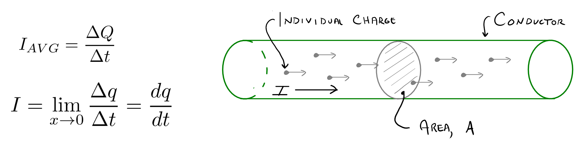 </center> .image-credit[Adapted from Practical Electronics for Inventors by Scherz and Monk] --- # Electric Current | Device | Typical Current Draw | |---------------------|----------------------| | Microchip | pA to $\mu$A | | Small LED | 0.02 A | | Smartphone (in use) | 0.2 A | | Laptop | 2 A | | 100-W Light Bulb | 1 A | | Toaster | 10 A | | Car Starter | 200 A | | Lightning | 1000 A | .image-credit[Adapted from Practical Electronics for Inventors by Scherz and Monk] --- # Simple Circuits <center> 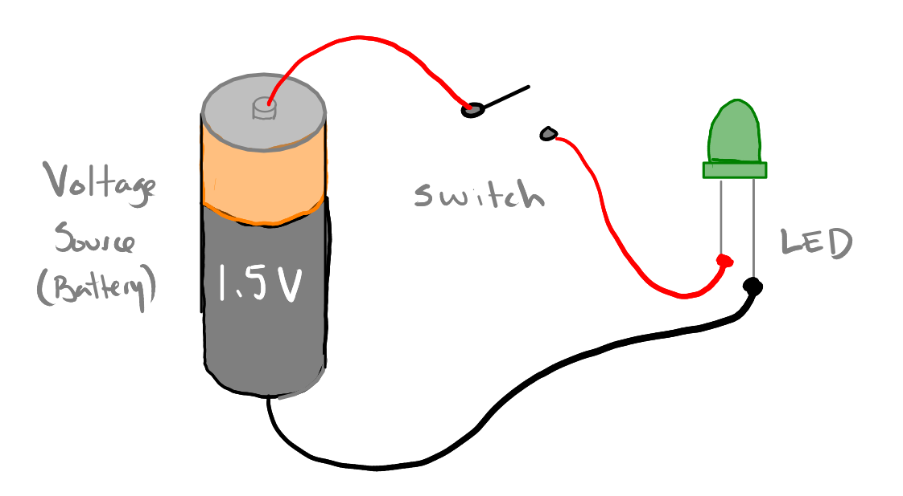 </center> .image-credit[Adapted from Practical Electronics for Inventors by Scherz and Monk] --- # Simple Circuits <center> 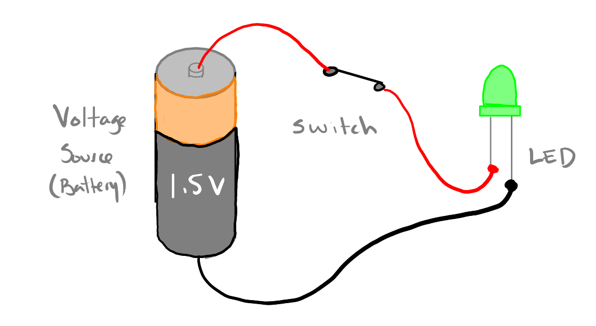 </center> .image-credit[Adapted from Practical Electronics for Inventors by Scherz and Monk] --- # Simple Circuits <center> 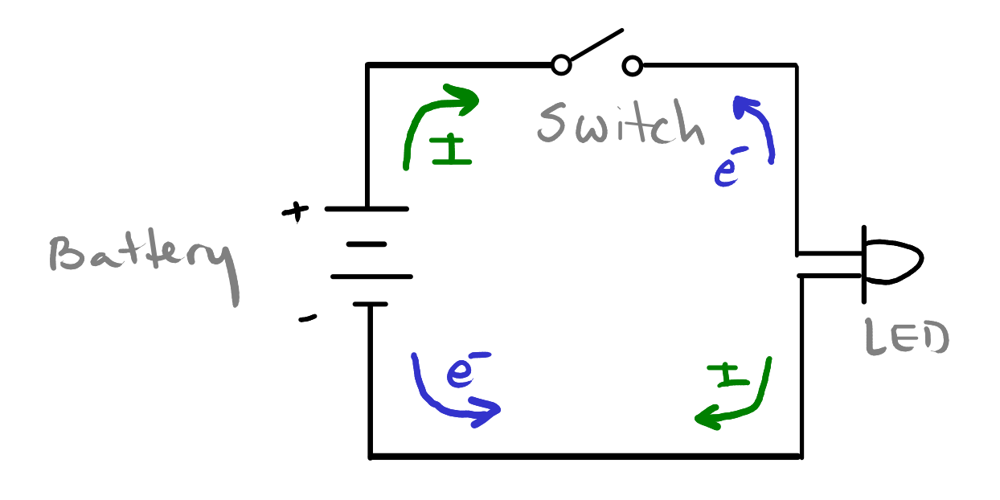 </center> .image-credit[Adapted from Practical Electronics for Inventors by Scherz and Monk] --- # Resistors <center> 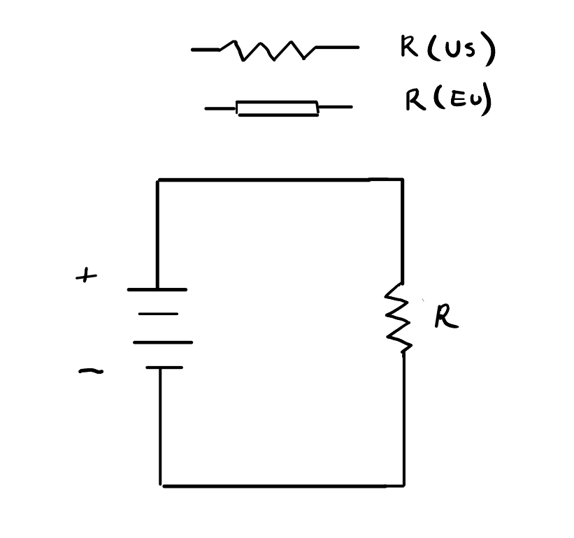 </center> .image-credit[Adapted from Practical Electronics for Inventors by Scherz and Monk] --- # Resistivity <center> 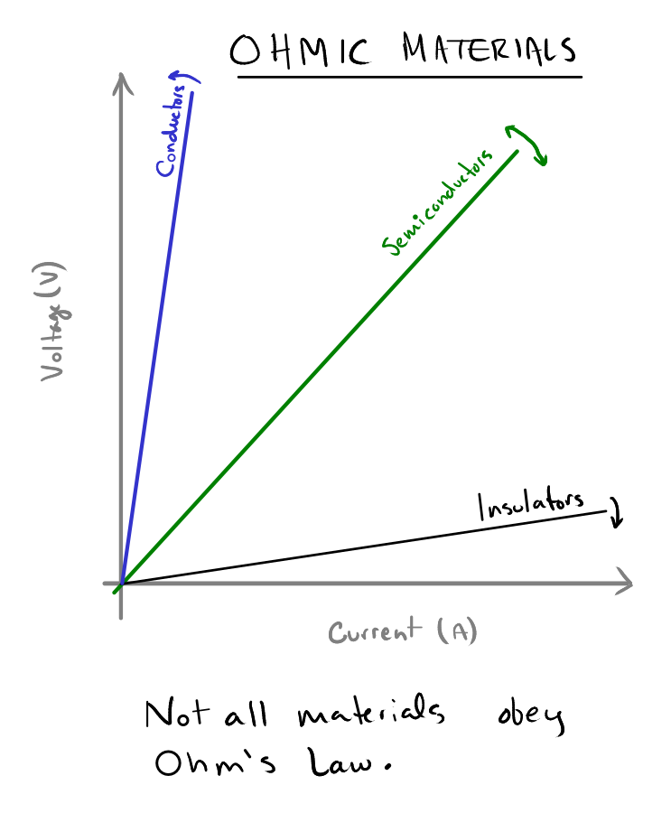 </center> .image-credit[Adapted from Practical Electronics for Inventors by Scherz and Monk] --- # Grounds <center> 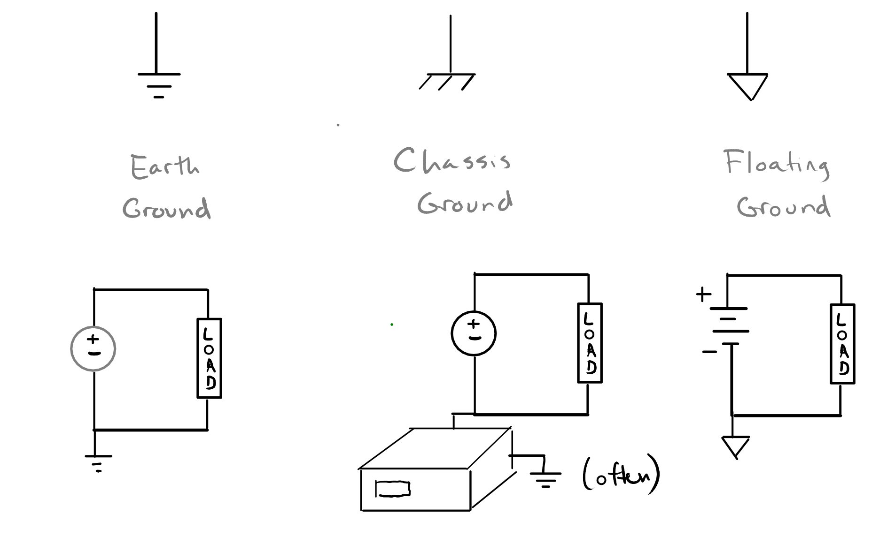 </center> .image-credit[Adapted from Practical Electronics for Inventors by Scherz and Monk] --- # Grounds <center> 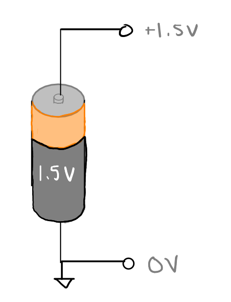 </center> .image-credit[Adapted from Practical Electronics for Inventors by Scherz and Monk] --- # Grounds <center> 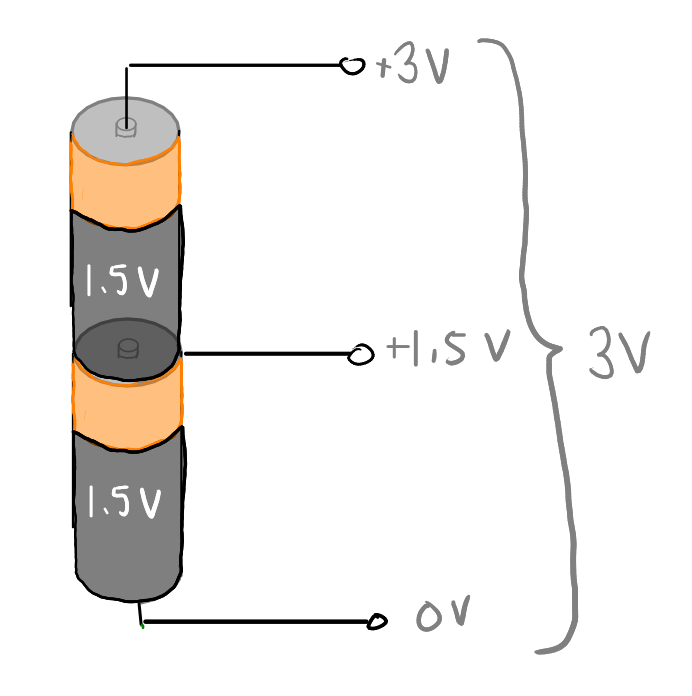 </center> .image-credit[Adapted from Practical Electronics for Inventors by Scherz and Monk] --- # Grounds <center> 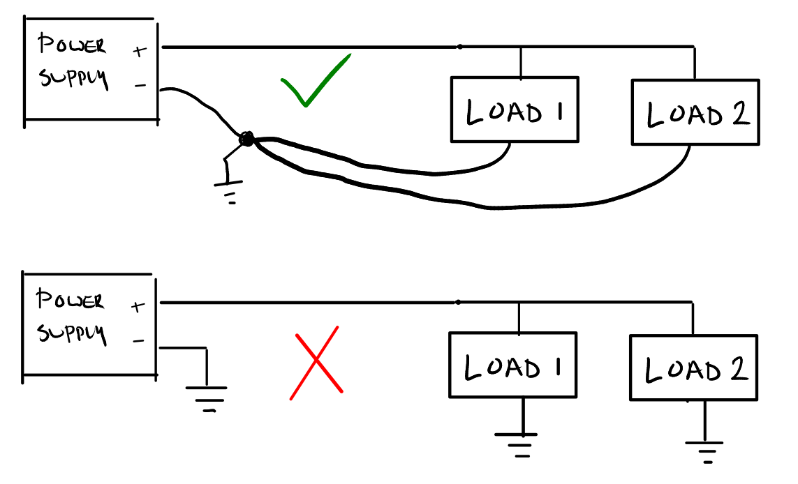 </center> .image-credit[Adapted from Practical Electronics for Inventors by Scherz and Monk] --- # Parallel Resistors <center> 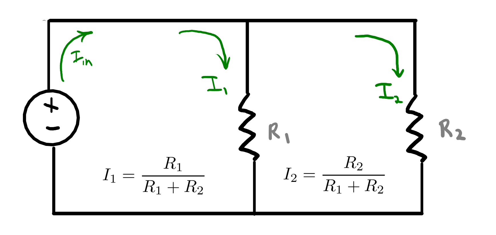 </center> .image-credit[Adapted from Practical Electronics for Inventors by Scherz and Monk] --- # Series Resistors <center> 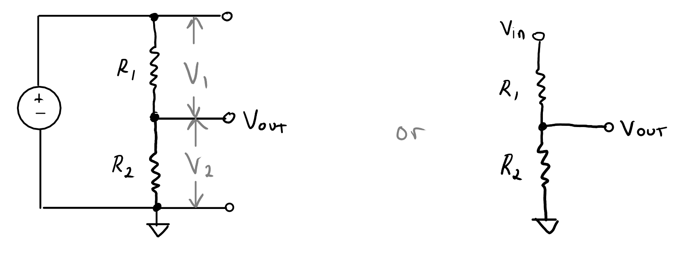 </center> .image-credit[Adapted from Practical Electronics for Inventors by Scherz and Monk] <!-- =============================================================================== -->